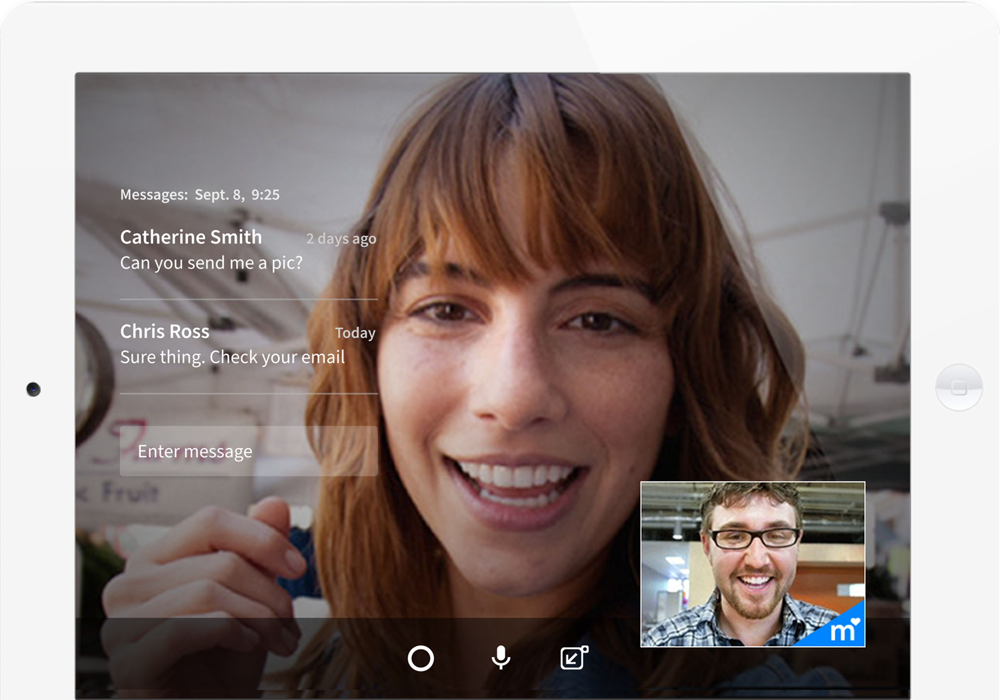
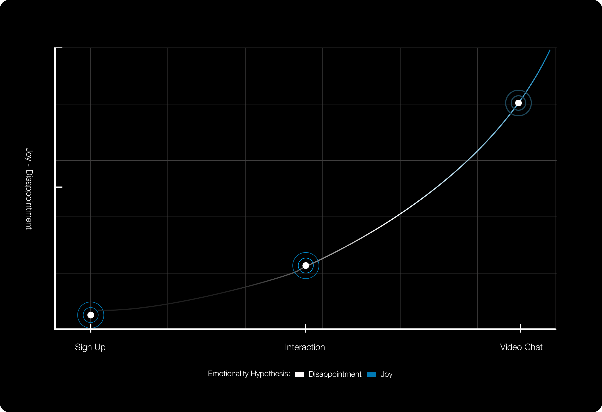

Match.com's Stir online
UX & Interaction Design and Testing.

Project Overview
Video, Audio, and Text Chatting, interface for 1 to 1 and group dynamics. WebRTC + Node.js Peer to Peer Video/Audio. No Expensive architecture on the backend. No Flash or Plugins. The goal was to present a solution that would help ease the transition from online to offline interaction and combat the stigma of deception in online dating.

Process & strategy
The process began with a collaborative working session between 2 developers and myself as the UX Designer, IA. We utilized internal and external data sources to determine user pain points, gaps in the current experience and possible solutions to increase engagement. We determined with WebRTC we could create a pressure free way to make connections and provide an answer to users leaving Match to Skype. Through the double diamond process we uncovered insights and I ideated on design solutions that were developed for 1 to 1 and group video chatting.

Outcome
Because the technology was validated, a competitor analysis and financial feasibility were the next steps to determine whether to go to market with the feature. Considering the resources needed to manage customer services the feature was shelved for a later date as a viable option to boost user engagement and revenue as a standalone feature.